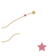

A faithful offline preservation of
— Summer · 2008 —
or jump straight to —

A faithful offline preservation of
— Summer · 2008 —
or jump straight to —
Summer 2008 · An American Girl Archive
You're looking at a faithful, offline snapshot of americangirl.com as it existed around July 11, 2008 — the Nicki Fleming Girl-of-the-Year era, the Kit Kittredge film, the original eight historical characters before any retirements.
What plays
What's gone
agm category) — never crawled by any archiveKeep the archive online — tip the archivist on Ko-fi